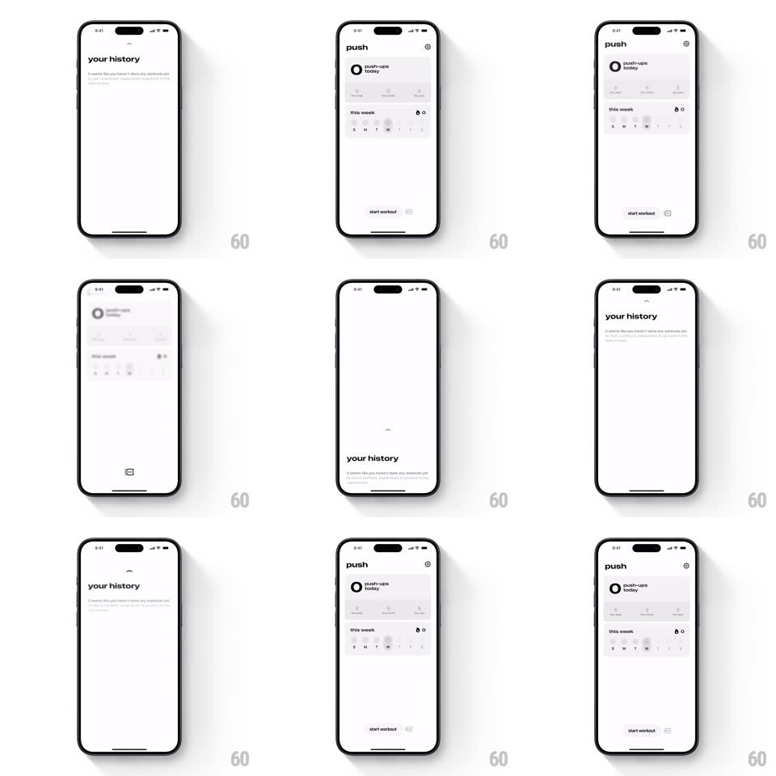

Media
Frame-by-frame

Rebuild this interaction 1:1: Push's vertical tab switch - swiping up on the workout dashboard slides the "your history" screen over it with a dynamic blur, and swiping down returns, both riding spring physics with velocity.

Rebuild this interaction 1:1: Push's vertical tab switch - swiping up on the workout dashboard slides the "your history" screen over it with a dynamic blur, and swiping down returns, both riding spring physics with velocity.
## Integration
Integration: stack-agnostic spec - springs given as stiffness/damping, timed motions as duration + curve; map every value to your framework and animation library of choice.
## Scene
Light, minimal: the "push" dashboard ("push-ups today" ring card, stat tiles, "this week" day dots, "start workout" bar pinned bottom) and above it the "your history" screen (big lowercase title, empty-state caption), which covers the dashboard when raised.
## Motion spec
Pattern: vertical cover-flow tab switch with dynamic blur.
- Swipe up: the history screen tracks the finger 1:1 as it slides up over the dashboard; the dashboard beneath blurs progressively (0 -> 12px) and dims slightly as the cover rises.
- Release: velocity-aware spring (~320/26) completes or reverses the transition - a fast flick commits even from 20% travel, a slow drag needs ~50%.
- The history screen carries a small grabber notch at its top edge; the "start workout" bar stays pinned above everything, dimming to 60% while history is up.
- Swipe down reverses: the blur unwinds with the drag, dashboard sharpening as the cover drops.
## Calibration
- The blur is the depth cue - it must track drag position continuously, never toggle.
- Both screens stay live under the transition; no snapshotting artifacts.
## Reduced motion
Screens crossfade; no blur or tracking.
## Don't miss
- The cover has a soft top-corner radius and a hairline shadow that deepens as it rises.
- Scroll inside history only begins once the cover is fully up - gesture priority is unambiguous.